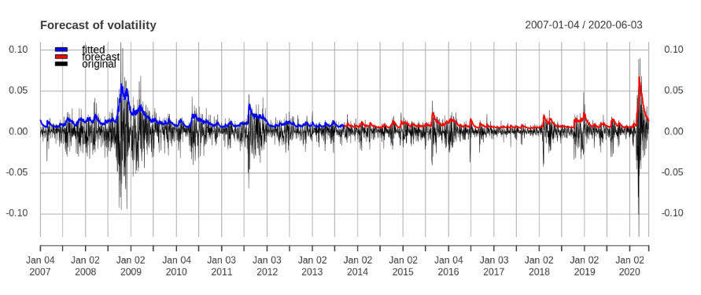

Intro
A closer look at SP&500 using Garch
Understanding and analyzing the underlying mechanism of the stock price was always one of the major objectives among traders and hedge-fund companies. The non-constant volatility of the stock-returns demands special models to predict the stock price characteristics. This report analyzes the underlying price evolution of the S&P 500 index and forecasts the volatility and the return. In particular, we discuss the performance of a special model called Generalized AutoRegressive Conditional Heteroskedasticity (GARCH).